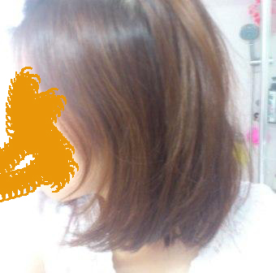
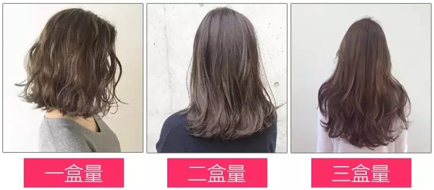
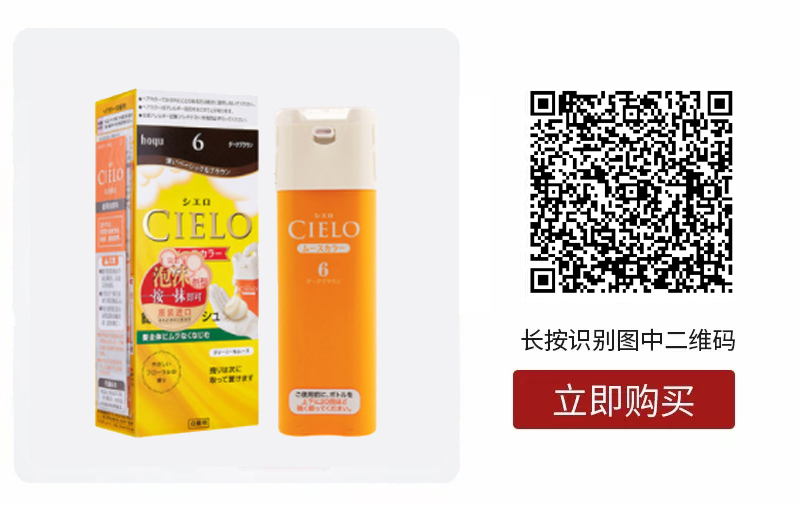
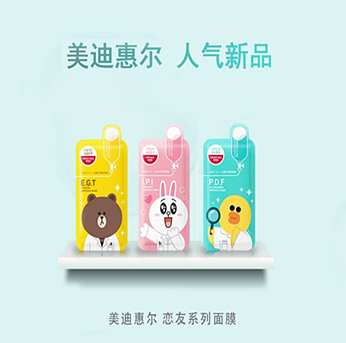

快过年了，妹子们都想着怎么变更美，然后拜年时在三姑六婆的口水中脱颖而出，迎来羡慕眼光。
其实只要功夫做得好，你就一定会让你成为全家最靓的女。比如说，可以在发色上做点小改变，让自己变得与众不同，今天就先从发色说起吧。
大家都知道，选对了发色，真的很重要，染对了发色，不仅能弥补肤色的不足，还能显嫩又充满仙气！
比如说山支大哥孟美岐，没参加比赛前，一头黑发明显沉闷又缺乏魅力，参加《101》后一头金色长发显得灵动又可爱。
在舞台灯光的映衬下，更是闪耀出仙女般的光芒。
JOY姐上周刚刚染了一头棕色，还是自己在家染的，只花了100块不到，而且最重要的是还不伤头发。

年底了，理发店开始疯狂涨价，去哪染个头发不要300+以上，排队什么的就更不用说了，所以在家染发就是最好的选择了。
说实话，这已经不是JOY姐第一次动手染发了，自从入手了这款染发利器，JOY姐已经回购N次了。JOY姐觉得它的好处就在于，用起来非常方便，不用勾兑，直接染就行，小白也可以自己在家染发了。
有的染发剂分为好几盒，比如1号是染色的，2号是营养修护的，3号是固色的，使用比起来比较麻烦。宣若染发剂则不同，只要一瓶就可以轻松搞定。
萱若的这款是摩丝质地的，每次挤压1~2滴，然后沿着发根，像平时洗头发一样，直接把泡沫揉搓进头发里就可以了，是不是特别方便呀~
因为是摩丝的，挤压出来后成为泡泡，特别容易揉进头发里，上色也很均匀。
里面含有海洋胶原蛋白和氨基酸成分，染完后头发很顺滑，一改平时的毛躁干枯。
同时它还添加了葡萄籽油、尤加利油、月见草油等亮色及固色成分，可以保持染发后的色彩，不容易掉色。

JOY姐的中长发，一盒可以用一次。头发短的妹子可以用俩次，用不完的收起来还可以留着下次用。
下面就来教大家，如何挑选适合自己的发色。
棕色一直以来都是流行的发色之一，百搭还适用性高，非常适合亚洲妹子的肤色，我们日常见的大多发色都属于这个色系。

时尚棕
这个颜色最显肤色了
类似于今年流行的焦糖色
它让你的发质看起来如牛奶般顺滑
还能衬托出发丝的空气感
让整个人看起来hin温柔
自然红棕
自然红棕是属于偏红的颜色
新年里染这个发色
不仅能显白
还能衬托你的好气色
显得喜气洋洋呢
浅栗棕
浅栗棕有点偏亚麻色系
给人温暖又治愈的感觉
让你的肤色看起来更白亮
发质也看起来有光滑和质感
自然棕
很有气质又不会过于突兀
因为发色偏向于日常色
所以平时求稳的妹子可以尝试一下
穿衣也是比较百搭
深纯棕
如果你喜欢较为深的发色
那么这么可以说是非常适合你了
保持深发色的同时
可以在视觉上更好的调亮肤色
非常衬肤色
深栗棕
深栗棕色可以说是各种肤色的亲妈
这个颜色第一眼看上去像黑色
其实比黑色浅，看起来含蓄内敛
适合气质沉稳大气的女生
看完了文章
想没想好给自己想换个什么发色啊~
不管怎么说，趁着过年给自己染个仙女色
这款染发剂最近gao活动才68元
（平时卖98元哦）

顺便说一下
来街果店购物满88元
加30元还能换购美迪惠尔朋恋面膜哦

最后
希望大家都能在过年前
挑选到适合自己的发色
变美美哒~